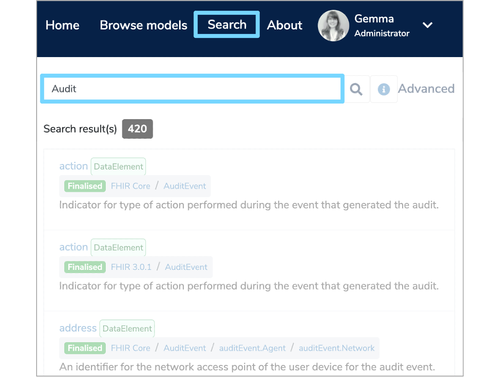
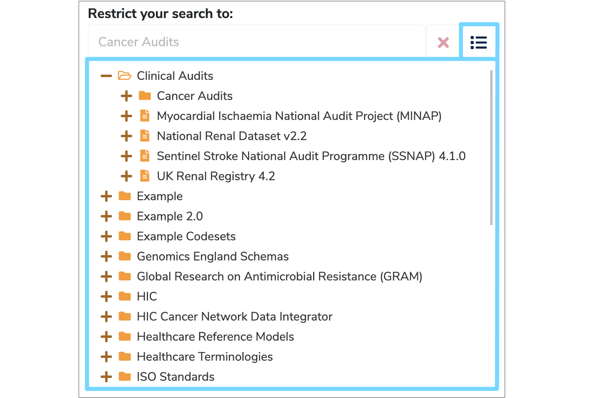
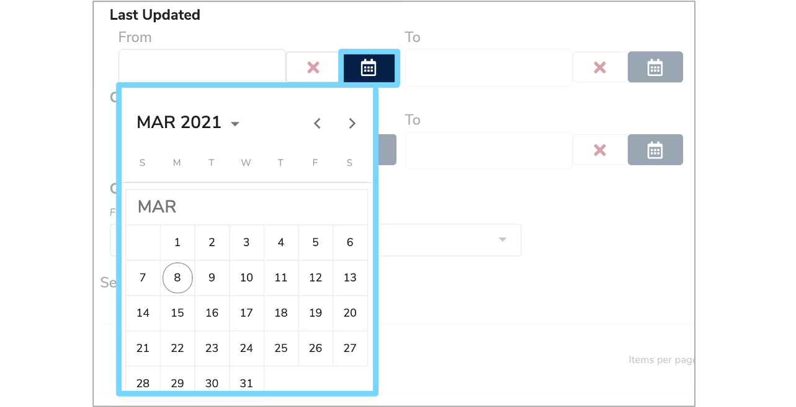
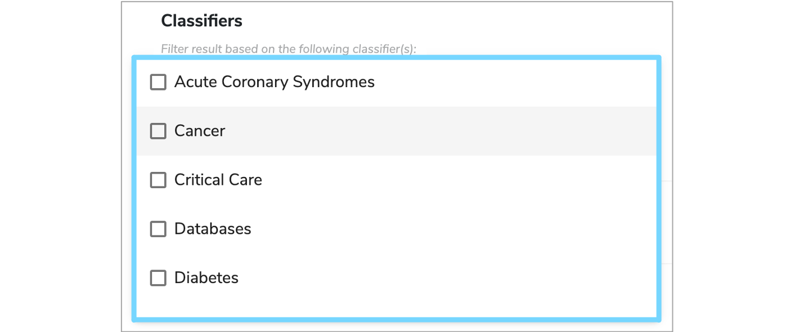

How to search
The search function within Mauro Data Mapper is extremely powerful and allows you to search for datasets or specifications throughout the whole catalogue. This user guide will explain how to effectively search for an item as well as the methods Mauro Data Mapper uses for searching.
1. Types of search¶
There are several different ways to search for an item within Mauro Data Mapper.
1.1 Search Models¶
The first method of searching is to use the search box on the top left of the finder panel above the Model Tree. Here, you can search 'Models', 'Classifications' and 'Favourites' by clicking the relevant tab and then entering the search term in the search box.
As you type your search, the Model Tree will automatically filter, displaying only the relevant results, with the search term highlighted in yellow wherever it appears within the list.
When searching Models, the results list will show Data Models and Data Classes which match the search term in any Label, description, comment or property.
To refresh the results, click the 'Search' icon or the 'Reload Data Models Tree' icon in the menu to the right of the search box. You can also choose whether you want the results list to feature superseded or old Data Models by clicking the 'Filters' icon and then selecting the relevant options. To remove filtering click the small 'x' on the right of the search box.

1.2 Main search¶
Another method of searching is to use the main search box which can be found under the 'Search' tab in the header. Once again, as you type your search, the results list will automatically filter, with the number of results displayed at the top of the list. You can then click on a result that you're interested in and the details panel will open up in a new tab in your browser.

1.3 Advanced search¶
To conduct a more specific search you can use Advanced search. To the right of the main search box under the 'Search' tab in the header, click 'Advanced'. This will display a variety of different options to filter your search by.

Restrict your search¶
Firstly, enter the search term in the main search box and the results list will automtically filter at the bottom of the page. You can then restrict your search to a particular Folder, Data Model or Data Class by clicking the menu icon to the right of the 'Restrict your search to:' box. This will display the Model Tree, from which you can select the relevant item.

Domain Types & Search Type¶
You also have the option to filter by 'Domain Types'. This allows you to specify whether you want to search Data Models, Data Classes, Data Elements, Data Types or Enumeration Values by selecting the relevant boxes.
You can also define the 'Search Type'. If you only want to search in the title of elements and not in the descriptions, metadata or aliases, then tick the ‘Title only’ box. Alternatively, select ‘Exact match’ to search for the exact search term throughout the entire catalogue.
Date ranges¶
Advanced search also allows you to specify a range of dates so that you can filter results by when they were 'Last Updated' or 'Created'. Enter the relevant date in the format of dd/mm/yyyy or click the ‘Calendar’ icon to the right of each date box. This will display a small calendar where you can select the relevant date which will automatically populate the date box.

Classifiers¶
In some cases you can also filter your search by Classifiers by clicking the ‘Classifiers’ box and selecting the relevant options from the dropdown menu.

2. How search works¶
The search functionality in Mauro Data Mapper implements the Simple Query Strings of Hibernate search.
This is essentially where a simple syntax is used to parse and split the provided query string into terms based on special operators. The query then analyses each term independently before returning matching results.
2.1 Search syntax¶
The search syntaxes that Mauro Data Mapper supports are:
- AND using +
- OR using |
- NOT using –
- To search for different suffixes use * e.g. prefix*
- To search for an exact phrase use “” e.g. “example phrase”
- To add precedence to search terms, use () e.g. (important) example
- To search for similar terms (fuzzy string searching) use ~2 e.g. smoke~2 will return smokes, smake etc
- To search for similar phrases use “” and ~2 e.g. “cigarette smoke”~3
For example, if you are interested in information relating to smoking. Searching ‘smoking’ will return a list of results. However, if you want to be more generic you can type ‘smoke*’ which will search for smoking, smoker, smoked etc.
To look at information relating to smoking and pregnancy you can type ‘smok*+pregnancy’ which will return results that include both pregnancy and the different variants of smoking.
2.2 Search examples¶
Below are some more examples to further illustrate how to use the search syntaxes effectively:
- storm~2 - will return results containing storms or sturm
- war + (peace | harmony) - will return results containing "war and either peace or harmony"
- storm tree - will return results containing the words storm or tree
- storm and tree - will return results containing exactly the phrase storm and tree
2.3 Label & Metadata Key¶
The Label and Key entries are indexed using a WordDelimiter analyser. This essentially splits up the search term into individual words at the following points:
- Spaces
- Hypens
- Numbers
- Capital letters
- Full stops
These individual words are referred to as ‘Keys’ and once the search term has been split up into its various keys, these are then saved and used to conduct the search. Therefore, the results will only match the keys and not the whole search phrase.
For example:
- Datamodel for test - will be searchable by the keys datamodel, for and test
- Test DataModel - will be searchable by the keys test, data and model, it will not be searchable by the key datamodel because of the capital letter
- Test DataModel V1.0.1 - will be searchable by the keys test, data, model, v1, 0 and 1. It will not be searchable by the keys datamodel or v1.0.1
- subject-34567 - will be searchable by the keys subject and 34567